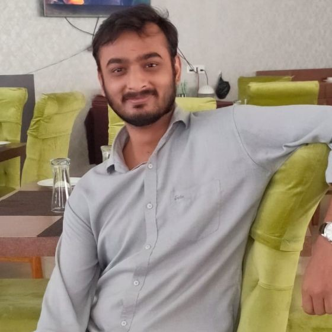

About Me
This is Nishant Kumar Upadhyay, I have done M.Sc. in Regulatory Policy And Governance from TISS Mumbai and Graduated in Computer science from Kirorimal college. My Interest is to bridge the gap between technology and Policymaking And generate a real sense of critical and analytical ability.
Education
Masters, Regulatory Policy and Governance
TATA INSTITUTE OF SOCIAL SCIENCE
Public Research University
Mumbai, Maharashtra, India |
2020 - 2022
CGPA 7.6/10 |
Bachelor, Technology/Computer Science
KIRORIMAL COLLEGE, DELHI UNIVERSITY
Delhi University
Delhi, India |
Passed, July 2019
CGPA 7.14/10
Division 1 |
HSC
SVM DEORIA
CBSE Board
Uttar Pradesh, India |
Passed, July 2015
Marks 91%
Division 1 |
SSC
SVM DEORIA
CBSE Board
Uttar Pradesh, India |
Passed, July 2013
CGPA 10/10
Division 1 |
Thankyou for visiting my website.
Career Highlights
- Technical specialist and coordinator at La Voice Kirori Mal college, Delhi.
- Researcher at Enactus Kirori Mal college, Delhi.
- Research scholar at Parivartan Gender Forum, Kirori Mal college, Delhi.
- Child Scientist and Youngest Science guide teacher awarded by National children Science congress 2013 & 2015.
Work Experience
January 2018 – May 2018
Technical Coordinator
Renaissance Kirori Mal College
Delhi, India
Renaissance is the Annual cultural fest of Kirori Mal college, University of Delhi. I hold the responsibility of technical Coordinator and Social media marketing. In Technical Department, I had done video editing, Photoshop, Website Designing, Prospectus and Brochure Making, Newsletter Making.
|
October 2016 – December 2018
Editor and Technical Head
La Voice- Newsletter Of KMC
Delhi University
La Voice is Monthly Newsletter of Kirori Mal College, Delhi University. It covers the departmental, College Society
and extracurricular activities news from all across the campus and promote the creative, editorials and opinion writing on social, political, economical and cultural issues. La Voice is one of the most reading Newsletter in delhi university.
• I was Editor and creative writer for editorial and opinion section of the newsletter.
• I designed the newsletter and head of the technical department of La Voice.
|
August 2017 – March 2018
Researcher and Technical Member
Kirori Mal College
University of Delhi
Project Dor, aims to improve the lives of a community of migrant women from Bihar and Jharkhand while also reviving the traditional art form of tie and dye by producing timeless classics which always remain in vogue. Project Patradya, edible cutlery, is produced by a community of Afghan refugees, residing in Bhogal District, New Delhi. Through Patradya, Enactus KMC aim to provide to them, a source of livelihood in an alien nation.
• I was at Researcher post and Project Analyst of Project Patradya, Enactus KMC.
• I was member of technical team of enactus KMC to make posters and video.
|
Skills
Major Proficiency
| Policy and Data Analyst |
⭐⭐⭐⭐⭐ |
| Research and Project Analyst |
⭐⭐⭐⭐⭐ |
| Leadership and Teamwork |
⭐⭐⭐⭐ |
| Public speaking and creative writing |
⭐⭐⭐⭐⭐ |
| Teaching |
⭐⭐⭐⭐⭐ |
| Editorial and OPED writing |
⭐⭐⭐⭐⭐ |
Computer Proficiency
| Graphic Designing and Video Editing |
⭐⭐⭐ |
| Microsoft Office |
⭐⭐⭐⭐ |
Basics in computer languages
( Java, Python, PHP and Android Programming ) |
⭐⭐⭐ |
| Q-GIS (Geographic Information System) |
⭐⭐⭐⭐ |
| R-programming and Data Analysis |
⭐⭐⭐⭐⭐ |
Achievements
- Secured title of state child scientist in national children science congress 2013 and 2015.
- Secured 3rd Rank in National Vidya Bharti Science and Education Meet’ 2015
- Got selected for SSB Training in Indian Navy through TES 2016.
- 1st Rank in Essay Competition in Parivartan society Delhi University and facilitated with title of Gender ambassador from Delhi Government 2017
Blog
- Open blog link in another window : Click
- Open poetry link in another window : Click
Open blog link here
Click |
Open Poetry link here
Click |
Contact